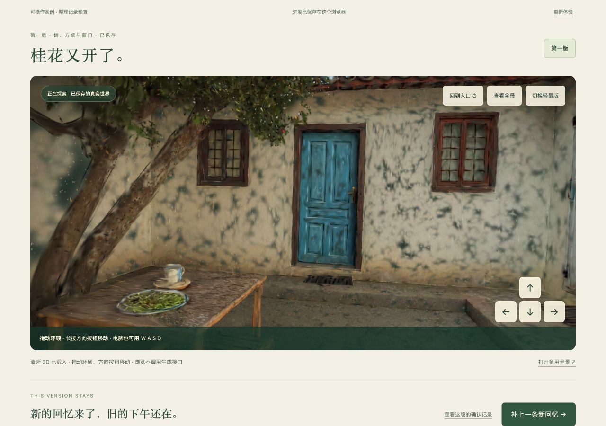
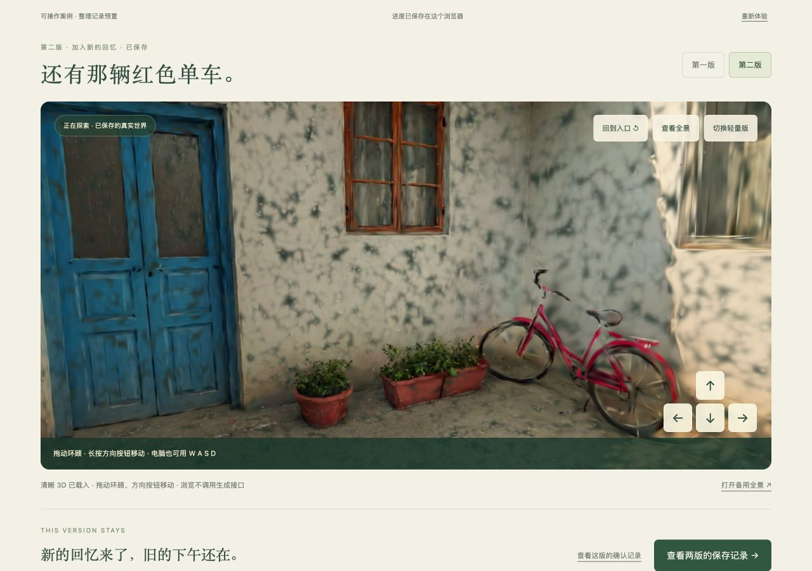
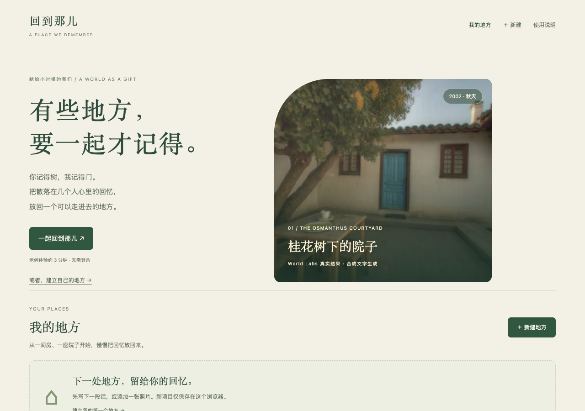
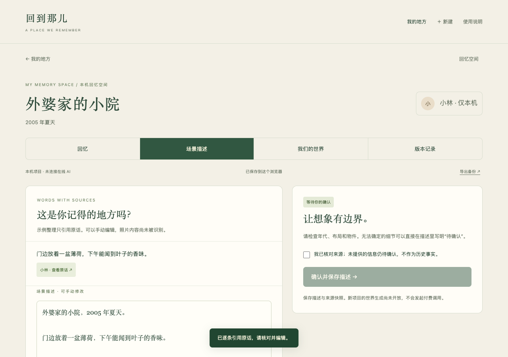

合成口述
阿禾记得桂花树，小满记得方桌，莉莉记得蓝门。案例没有私人照片。
旧纸白、桂叶绿、褪色蓝。视觉的重心，是院子和一起记得它的人。

第一版：桂花树、方桌与蓝门。World Labs 真实生成结果的查看器实拍画面，非历史照片。
打开完整全景 ↗
第二版查看器实拍：描述加入蓝门右侧的红色小自行车。重新生成，其他布局和细节可能变化。
打开完整全景 ↗
体验真实世界示例，也可以新建自己的地方。项目与未发送的文字草稿都会留在当前浏览器。

个人项目逐条引用原话并支持手动编辑；此处为本机示例整理，不代表在线模型推理。新的回忆不会改写旧确认记录。
阿禾记得桂花树，小满记得方桌，莉莉记得蓝门。案例没有私人照片。
蓝门属于 2002 年，绿门属于 2008 年以后。预置整理记录保留原话与补充。
确认描述与来源快照，保留模型将要补全的部分；本例直接用文字生成世界。
World Labs 提前生成两个独立结果。交互 Demo 读取归档文件，并保留两个版本。
未单独调用参考图模型。全景是 World Labs 生成结果的一部分，不冒充生成之前的历史图片或独立参考图。
标题采用系统宋体，界面采用系统无衬线。没有外部字体依赖。
“关键缺口已补全”“第一版始终保留”。把确认、来源和版本做成可查看的内容。
轻量 3D 加载失败时，真实缩略图与全景仍然可用，不自动重新生成。
世界素材由本项目通过 World Labs API 使用虚构文字生成；没有使用私人照片。界面、标识、案例文本与查看器代码为本项目制作。两版的生成时间、模型、输入描述、资产摘要与费用保存在各自生成清单中。Generated using World Labs；API 输出分发依据其服务条款第 3.3(d) 节，不表示 World Labs 对本项目背书。
这里的两个世界均不是历史还原证据。轻量 3D 画质与生成全景不同；没有物理碰撞或多人实时角色。独立工作区中的原创程序场景与 Niantic 技术样例均未作为这两版的生成成果展示。